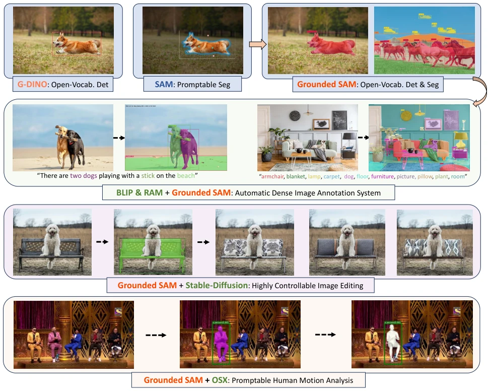
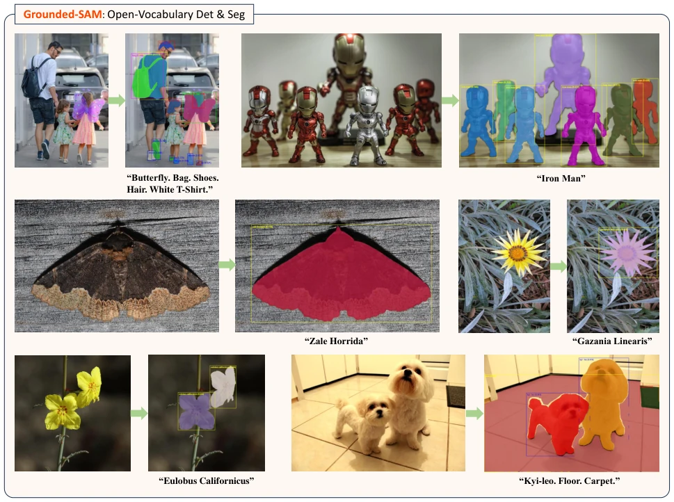
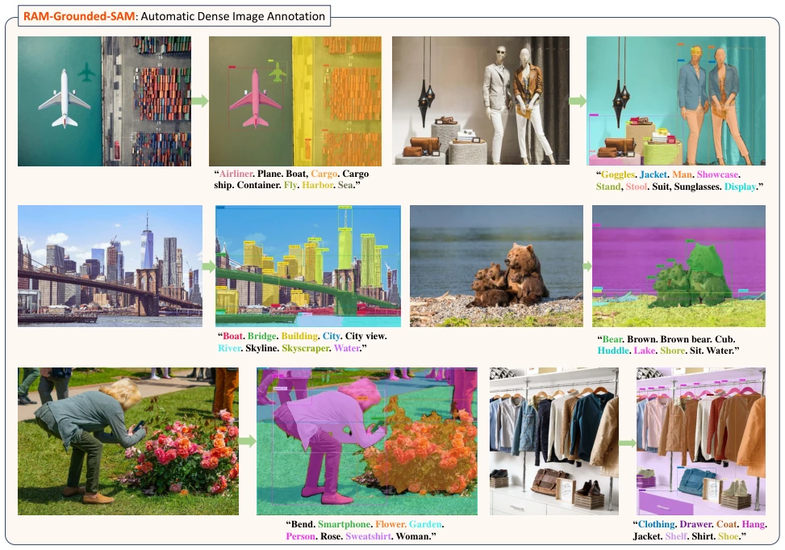
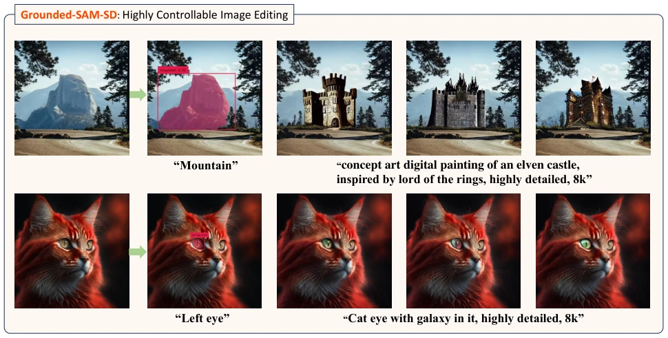
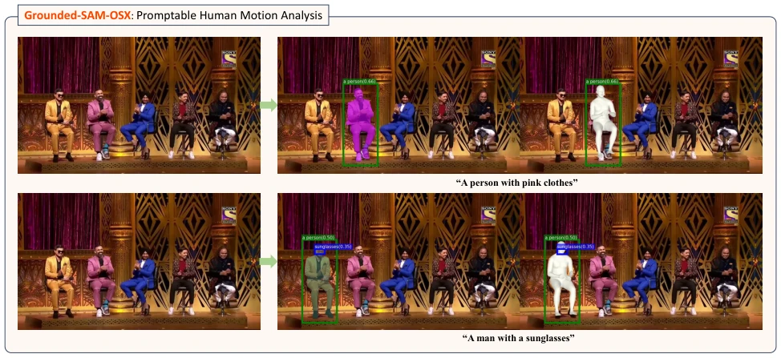

Grounded SAM: Assembling Open-World Models for Diverse Visual Tasks
Tianhe Ren, Shilong Liu, Ailing Zeng, Jing Lin, Kunchang Li, He Cao abspdf
论文点评Review
Grounded SAM 本质上是个“缝合怪”的高级形态，把 Grounding DINO 和 SAM 两个 SOTA 模型硬连在一起，就实现了文本驱动的开放集分割。这招挺聪明，不用重新训练一个大模型，直接复用现有能力，省了算力也省了数据。但缺点也很明显，它把两个黑盒串起来，一旦 DINO 检测框偏了，SAM 再强也救不回来，属于“垃圾进垃圾出”的典型。不过对于开放世界任务，这种“组装式”思路确实比硬训统一模型更灵活，毕竟现实世界不需要一个全能模型，只需要一个能调度的管家。虽然没提出新架构，但把现有模型组合出 2n-1 种任务的能力，确实让工程落地更香了，就是依赖上游模型的性能天花板。
Grounded SAM is essentially an advanced form of a 'composite' system, directly integrating two SOTA models, Grounding DINO and SAM, to achieve text-driven open-set segmentation. This approach is quite clever, avoiding the need to retrain a large model, directly reusing existing capabilities, saving compute and data. However, the drawbacks are also obvious; it strings two black boxes together, once DINO detection boxes are off, no matter how strong SAM is, it cannot be recovered, belonging to the typical 'garbage in, garbage out.' However, for open-world tasks, this 'assembly-style' thinking is indeed more flexible than training unified models from scratch, after all, the real world does not need an omnipotent model, just an orchestrator. Although no new architecture is proposed, combining existing models to achieve 2n-1 task capabilities does make engineering deployment more practical, it just depends on the performance ceiling of upstream models.
研究动机Motivation
开放世界的视觉感知是自动驾驶和机器人导航的关键，但现有方法各有短板。统一模型如 UNINEXT [66] 和 OFA [59] 受限于数据规模，尤其在开放集分割任务上表现不佳。基于 LLM 控制的方法如 HuggingGPT [55] 和 Visual ChatGPT [62] 虽然能调度模型，但过度依赖 LLM 的理解能力，效率低且易出错。市场上缺乏一个能支持复杂开放世界任务（如开放集分割）的鲁棒流水线。Grounded SAM 旨在通过集成基础模型（Ensemble Foundation Models）来解决这一问题，利用 Grounding DINO 的开放集检测能力和 SAM 的提示分割能力，填补了现有方案在灵活性和性能之间的空白，为多模态任务提供了更高效的解决方案。
Open-world visual perception is critical for autonomous driving and robot navigation, but existing methods each have limitations. Unified models such as UNINEXT [66] and OFA [59] are constrained by data scale, performing particularly poorly on open-set segmentation tasks. Methods controlled by LLMs such as HuggingGPT [55] and Visual ChatGPT [62] can schedule models, but overly rely on LLM understanding capabilities, resulting in low efficiency and susceptibility to errors. There is a lack in the market of a robust pipeline capable of supporting complex open-world tasks (such as open-set segmentation). Grounded SAM aims to address this issue by integrating foundation models (Ensemble Foundation Models), leveraging Grounding DINO's open-set detection capabilities and SAM's prompt segmentation capabilities, bridging the gap between flexibility and performance in existing solutions, and providing a more efficient solution for multimodal tasks.

Figure 1: Grounded SAM can simultaneously detect and segment corresponding regions within images based on arbitrary text inputs provided by users. And it can seamlessly integrate with other Open-World models to accomplish more intricate visual tasks
The overall pipeline is divided into two parts: core detection segmentation and extended applications. The core process is: given an input image and text prompt, first generate corresponding bounding boxes through Grounding DINO [38], these boxes are input as prompts to SAM [25], thereby generating precise masks. This step-by-step strategy solves the data scarcity problem of direct text segmentation. On this basis, the authors demonstrate multiple extensions: combining RAM [83] to achieve text-free automatic dense image annotation; coupling Stable Diffusion [52]'s Inpainting capability to achieve high-precision controllable image editing; integrating OSX [33] to achieve promptable human motion analysis for specific individuals. Additionally, it can be combined with FastSAM [85] or HQ-SAM [24] to optimize inference speed or mask quality. The core innovation of this method lies in decoupling detection and segmentation, leveraging the synergy of expert models, achieving complex tasks without fine-tuning, and the process is highly interpretable, facilitating observation of inference results at each step.

Figure 2: Grounded-SAM effectively detects and segments objects according to various user inputs. Its effectiveness is not limited to common cases but also includes long-tail object categories (like "Zale Horrida", and "Gazania Linearis", e.g.). Some of the demo images were sampled from the V3Det [58] dataset. We greatly appreciate their excellent work.

Figure 3: RAM-Grounded-SAM combines the robust tagging capabilities of the RAM [83] with the open-set detection and segmentation abilities of Grounded SAM, which enables automatic dense image annotation with only image input (the demo images are sampled from the SA-1B [25] dataset).

Figure 4: Grounded-SAM-SD combines the open-set ability of Grounded SAM with inpainting

Figure 5: Grounded-SAM-OSX merges the text-promptable capability of Grounded SAM with the whole body mesh recovery ability of OSX [33], facilitating a precise human motion analysis system.
实验Experiments
在 Segmentation in the Wild (SGinW) 零样本基准上进行了评估，包含 25 个零样本数据集。结果显示，Grounding DINO-Base 与 SAM-Huge 组合达到了 48.7 的 mean AP，显著优于 UNINEXT [66]、OpenSeeD [79] 等统一开放集分割模型。使用 HQ-SAM [24] 进一步提升性能至 49.6。消融实验表明，Grounding DINO 的 Base 和 Large 模型配合 SAM-Huge 效果最佳。在长尾类别（如特定植物名称）上表现稳健，证明了其在开放集场景下的泛化能力。虽然主要依赖零样本设置，但结果验证了模型组装策略在复杂视觉任务中的有效性，为后续数据合成和模型训练提供了新途径。
Evaluation was conducted on the Segmentation in the Wild (SGinW) zero-shot benchmark, comprising 25 zero-shot datasets. Results show that the Grounding DINO-Base and SAM-Huge combination achieved a mean AP of 48.7, significantly outperforming unified open-set segmentation models such as UNINEXT [66] and OpenSeeD [79]. Using HQ-SAM [24] further improved performance to 49.6. Ablation experiments indicate that Grounding DINO's Base and Large models paired with SAM-Huge yielded the best performance. It demonstrated robust performance on long-tail categories (such as specific plant names), proving its generalization capability in open-set scenarios. Although mainly relying on zero-shot settings, the results verify the effectiveness of the model assembly strategy in complex visual tasks, providing new avenues for subsequent data synthesis and model training.